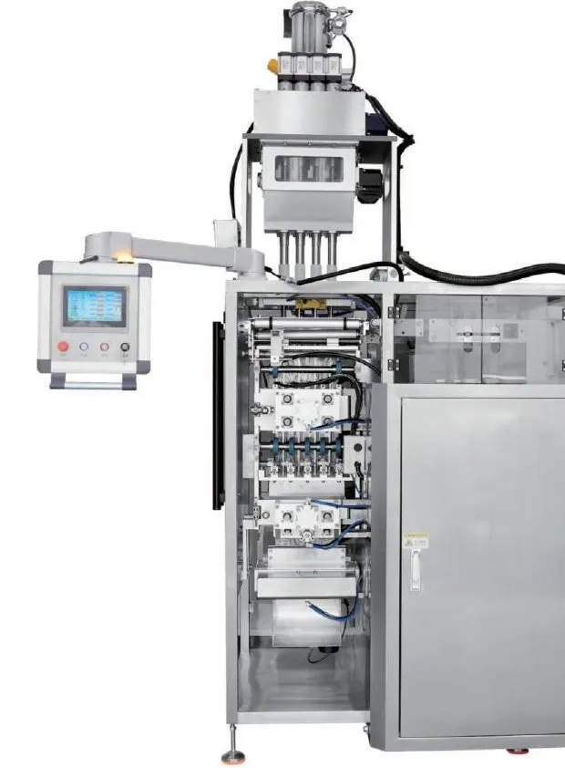
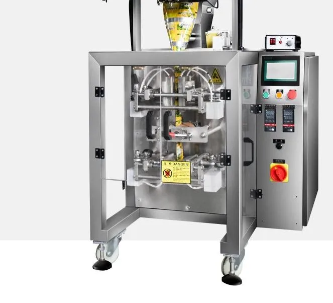

Multi-Lane 4-Side Seal Powder Sachet Packing Machine
Models: FL-M500 / FL-M700 / FL-M980
Packs milk powder, coffee, protein, seasoning and medicinal powders into flat four-side-sealed sachets on 2 to 16 lanes at once — 25–40 sachets per lane per minute.
- Lanes
- 2–16
- Speed
- 25–40 bags/lane/min
- Bag size
- W 50–125 mm × L 45–160 mm
- Dosing
- Auger (long / short screw, screw + cup)
- Material
- SUS304, GMP design
- Power
- 220 V 50 Hz, 2.8–5.5 kW
At a glance: Multi-Lane 4-Side Seal Powder Sachet Packing Machine (FL-M500 / FL-M700 / FL-M980): lanes 2–16; speed 25–40 bags/lane/min; bag size W 50–125 mm × L 45–160 mm; dosing Auger (long / short screw, screw + cup); material SUS304, GMP design; power 220 V 50 Hz, 2.8–5.5 kW.
What it packs
Milk powder, flour, seasoning powder, medicinal powder, protein powder, coffee powder, solid drinks, matcha, glucose, desiccant powder.
Key features
- Whole machine in food-grade 304 stainless steel, designed to GMP production standards.
- Film-offset correction system keeps every lane tracking straight for stable bag making.
- Servo motor film pulling gives firmer seals and neater finished sachets.
- Touch-screen HMI, Chinese/English by default; other languages available on request.
- Film-break detection with automatic alarm and stop, plus roll-film alignment and splicing device.
- Brand-name electrical components and PLC control for high speed and easy maintenance.
- Straight cut, zig-zag cut or continuous (chain) cut, with optional tear notch.
Multi-Lane 4-Side Seal Powder Sachet Machine technical specifications
| Model | FL-M500 | FL-M700 | FL-M980 |
|---|---|---|---|
| Lanes | 2–4 | 3–10 | 4–16 |
| Bag width | 50–125 mm | 50–125 mm | 50–125 mm |
| Bag length | 45–160 mm | ||
| Max film width | 500 mm | 700 mm | 980 mm |
| Sealing type | 4-side seal | ||
| Packing speed | 25–40 cuts/min per lane | ||
| Dosing | Long screw / short screw / short screw with cup | ||
| Cutting | Straight / zig-zag / continuous | ||
| Power supply | 220 V 50 Hz 2.8 kW | 220 V 50 Hz 4.1 kW | 220 V 50 Hz 5.5 kW |
| Dimensions (L×W×H) | 1617×1400×2880 mm | 1785×1670×2960 mm | 1950×1900×3100 mm |
| Weight | ≈900 kg | ≈1000 kg | ≈1200 kg |
Speed and accuracy depend on the product, fill weight and film. Specifications may be customised.
Options & configurations
Also available in 3-side seal and back-seal (stick) versions, and in granule (volumetric cup) and liquid/paste (piston or ceramic pump) versions. Options: date coder, tear notch, hanging hole, dust extraction, nitrogen flushing, automatic counting and boxing line.
Video: Multi-Lane 4-Side Seal Powder Sachet Machine running test
Factory running test of the FL-M500 4-lane four-side seal powder sachet packing machine: auger dosing into four lanes, servo film pulling, four-side sealing, cutting and finished sachet check.
FAQ about the Multi-Lane 4-Side Seal Powder Sachet Machine
How many sachets per minute can a multi-lane machine produce?
Each lane runs 25–40 cuts per minute, so output = lanes × speed. A 4-lane FL-M500 makes about 100–160 sachets/min; a 10-lane FL-M700 about 250–400; a 16-lane FL-M980 up to about 640 sachets/min, depending on the powder and the fill weight.
Which powders can be dosed accurately?
Free-flowing and non-free-flowing powders such as milk powder, coffee, protein, flour, seasoning and medicinal powder. Auger (screw) dosing is used; a stirrer and screw size are matched to your powder's flowability and fill weight. Send us a sample for a free test.
What is the difference between 4-side seal, 3-side seal and back seal?
4-side seal gives a flat square sachet sealed on all four edges (premium look, common for seasoning and medicine); 3-side seal is similar with one fold edge; back seal (stick pack) has a long vertical seam and is typical for coffee, sugar and supplement sticks.
What film should I use?
Heat-sealable laminated film such as PET/PE, PET/AL/PE, OPP/CPP or paper/PE. Film thickness and the maximum film width depend on the model (500, 700 or 980 mm).
Related machines

Multi-Lane Stick Pack Machine
Back-seal stick packs for instant coffee, sugar, milk tea, electrolyte and protein powders, granules, honey and liquid — 2 to 16 lanes, 20–40 sticks per lane per minute.
View specs →
Single-Lane Sachet Powder Machine
A compact, affordable sachet machine for 5–100 g of powder in back-seal, 3-side-seal or 4-side-seal bags — ideal for start-ups and small batches.
View specs →
VFFS with Multihead Weigher
A complete weigh-and-bag line for chips, puffed snacks, nuts, candy, dried fruit, frozen dumplings and pet food: Z-type elevator → multihead weigher → VFFS bagger → output conveyor.
View specs →Get a quote for the Multi-Lane 4-Side Seal Powder Sachet Machine
Tell us your product, pack weight and speed. An engineer replies within 24 hours with a recommended configuration, layout and price. Free product testing with video.